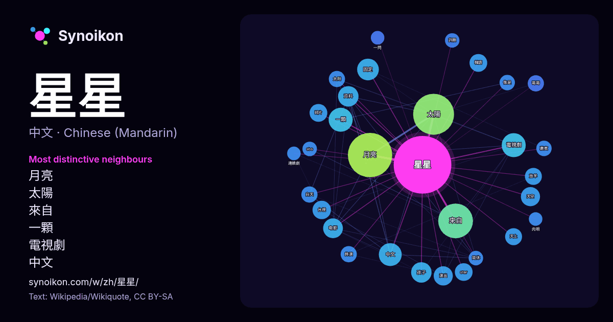

中文 · 每日一词列表
星星
“star” · 来自维基百科, Wikiquote 920 次出现中其周围的词。

最具特色的邻近词
- 月亮 70×
- 太陽 53×
- 來自 32×
- 一顆 21×
- 電視劇 20×
- 中文 15×
- 固定 15×
- 天空 14×
- 台視 14×
- 韓語 13×
- star 12×
- 碎片 12×
- 放羊 12×
- 孩子 12×
- 資料 12×
- 天上 12×
- 白天 10×
- 哥哥 9.6×
- 演出 9.6×
- 太阳 9.6×
× = 比维基百科普通文本中多出的倍数。
最常见的邻近词
- 月亮 75
- 太陽 64
- 來自 46
- 一顆 22
- 電視劇 22
- 中文 20
- 固定 18
- 孩子 16
- 資料 16
- 电影 15
- 天空 14
- 演出 14
- 香港 14
- 台視 13
- 獲得 13
- 電影 13
- star 12
- 中国 12
- 中的 12
- 碎片 12
上下文
- 查看维基词典中的词条「星星」。 星或星星，可以指： 天體，主要包括： 恒星（如矮星、巨星等） 行星 衛星 彗星 流星 星座 星云 矮行星 星 (星官)，中国古代星官之一 其它天體詳見天体列表。 星形，包括： 五角星 六角星（大衛之星），猶太教和猶太文化的標誌。 排成星形的有形數： 星數 術語： 星號，「*」符號 星星 Wikipedia snippets · 星
- 《來自星星的你》（韓語：[空／未定义]错误：{{Langx}}：无文本（帮助）[]错误：{{Langx}}：拉丁字母轉寫（帮助），英語：My Love from the Star）為韩国自2013年12月18日起播出的SBS水木連續劇，由金秀賢及全智賢主演，朴智恩擔任編劇，與張太侑聯手打造。當中全智 Wikipedia snippets · 來自星星的你
- 《放羊的星星》是2007年三立華人電視劇週日十點檔系列的第十四部作品。全劇共20集，由金牌製作公司製作，三立電視和台視共同監製。2007年3月11日於台視主頻道首播（逢星期日晚上九點半），並於同年3月17日在三立都會台緊接播出（逢星期六晚上九點整）。翌年七月，安徽卫视获得该剧中国大陆独播权，创下收视 Wikipedia snippets · 放羊的星星
- 《問問星星吧》（韓語：별들에게 물어봐，英語：When the Stars Gossip），為韓國tvN自2025年1月4日至2月23日間播出的土日電視劇，由《雖然是精神病但沒關係》、《愛在大都會》的朴信宇導演執導，《Pasta》、《嫉妒的化身》的徐淑香編劇執筆。劇情講述在無重力的太空站工作的女指揮 Wikipedia snippets · 問問星星吧
- 《星星知我心》（英語：Star Knows My Heart）是1983年紅極一時的台灣電視公司（台視）八點檔國語連續劇，林福地製作兼導演，吳靜嫻、石安妮、方向中、胡家瑋、蘇慧倫、溫兆宇主演，葉超監製兼導播。本劇情節感人肺腑、賺人熱淚，在當時引起很大的迴響，是台灣電視史上連續劇節目的代表之一。本劇標 Wikipedia snippets · 星星知我心
- 天王星（英語：Starscream：又譯為天王星、星星叫、紅蜘蛛、星吼），身高5公尺，是變形金剛系列中的活躍角色之一。通常是狂派(Decepticon)，並且是狂派中的高階軍官，變形成噴射機或類似的載具，個性狡猾、野心勃勃、同時對密卡登起異心，在G1動畫中以紅色和灰白色為主色調。和密卡登(Megat Wikipedia snippets · 星星叫
- 另一邊廂，因黃小龜孤假虎威利用周星星的名號來收保護費，甚至自稱「星字頭」幫派，讓大飛感覺自己在校內的勢力受到威脅，開始出馬針對周星星。黃Sir一直駐在校外觀察，但他對周星星的臥底身份毫不知情，更猜疑周星星在校內組織「星字頭」幫派，要求何敏與他劃清界線。但何敏始終信任作為學生的周星星，二人感情因此生變。 與此同時，周星星 Wikipedia snippets · 逃學威龍
- Little Star），又譯《一閃一閃小星星》或稱《小星星》《闪烁的小星》，是一首英國兒歌，旋律出自於法國民謠《媽媽請聽我說（法语：Ah! vous dirai-je, maman）》，歌詞則出自於珍·泰勒（英语：Jane Taylor (poet)）的英文詩《小星星》（The Wikipedia snippets · 一閃一閃亮晶晶
更多词
于 2026-10-09 以默认设置预先计算（±5 个词，中等语料）。交互式图可用实时数据刷新。
界面为机器翻译，欢迎指正。